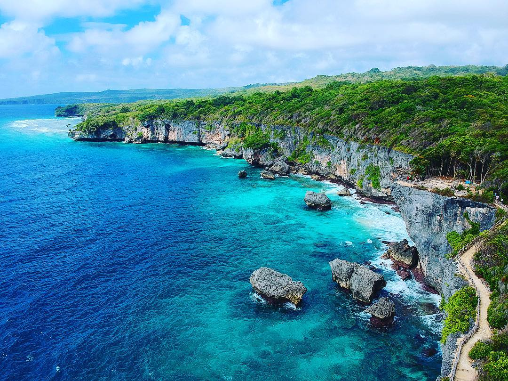
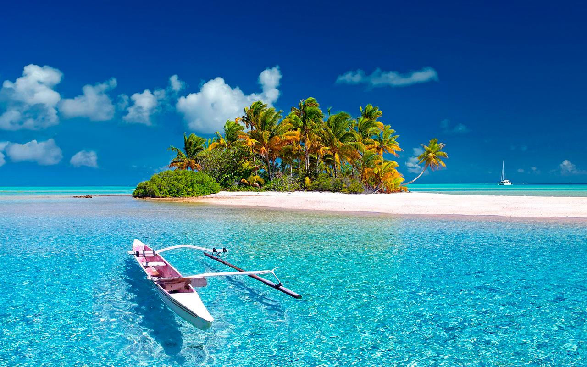

Muhammad Fikri Ramadhan ,(lahir di kabupaten barru,pada tanggal 18 Desember 1999)adalah seorang mahasiswa yang menuntut ilmu di tanah rantauan,merupakan seorang Putra anak ke-4 dari bersaudara dari pasangan suami istri Ahmad roji dan St.wasia,riwayat pemdidikannya adalah menempuh pendidikan di taman kanak-kanak Idhata Barru,dan melanjutkan sekolag dasar di SDI No.33 S.binangae,SMP 1 Barru dan kemudian di UPT SMAN 1 BARRU dan hingga kini ia menempuh pendidikan di salah satu Universitas islam negeri Alauddin Makassar.selama ini dia gemar berinteraksi dengan orang-orang di sekitaranya sehingga organisasi dan olahraga adalah kegemarannya,sejak SD hingga sekarang organisasi menjadi bagian hidupnya baik itu organisasi masyarakat hingga yang bersifat akademik di jenjang sekolah (SD,SMP dan SMA) dan kampus saat ini,adapun riwayat Organisasinya yaitu OSIS,PRAMUKA,PURNA PASKIBRAKA INDONESIA,dan beberapa oraganisasi tingkat Provinsi maupun Nasional .ia bertekad dan berprinsip bahwa “menyeimbangkan akademik dan organisasi adalah hal yang sangat peting,karna dengan kita berorganisasi akan banyak hal yang kita bisa dapatkan untuk masa depan kita,dan terkadang ada ilmu-ilmu yang tidak kita dapatkan di bangku kuliah”.cita-citanya yang paling terbesar saat ini adalah membanggakan kedua orang tua,keluarga dan sahabat-sahabatnya dan satu hal lagi dan paling utama adalah bisa bermanfaat bagi orang lain.